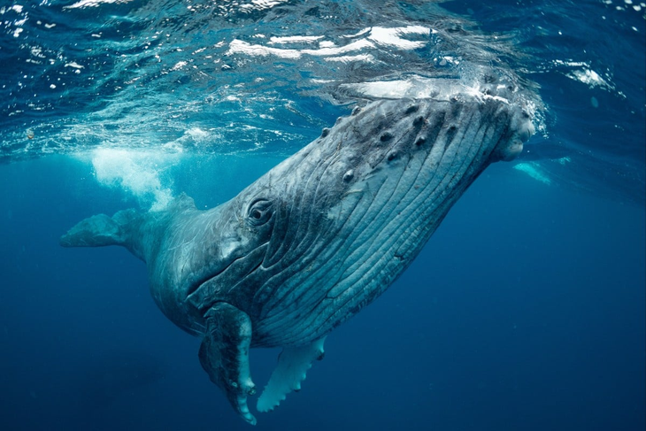
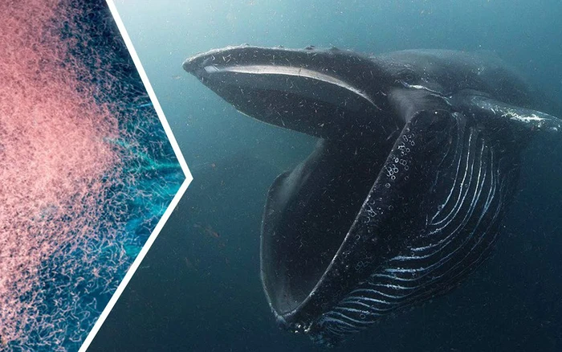
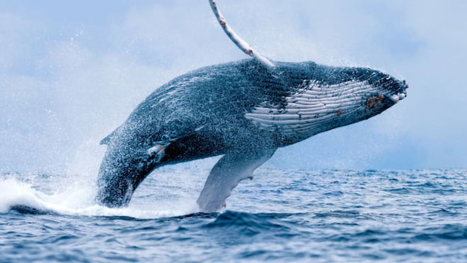
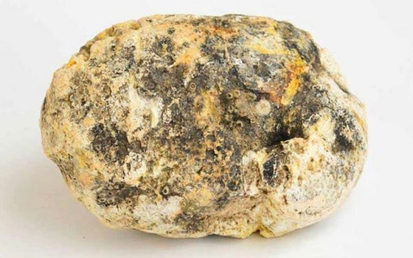
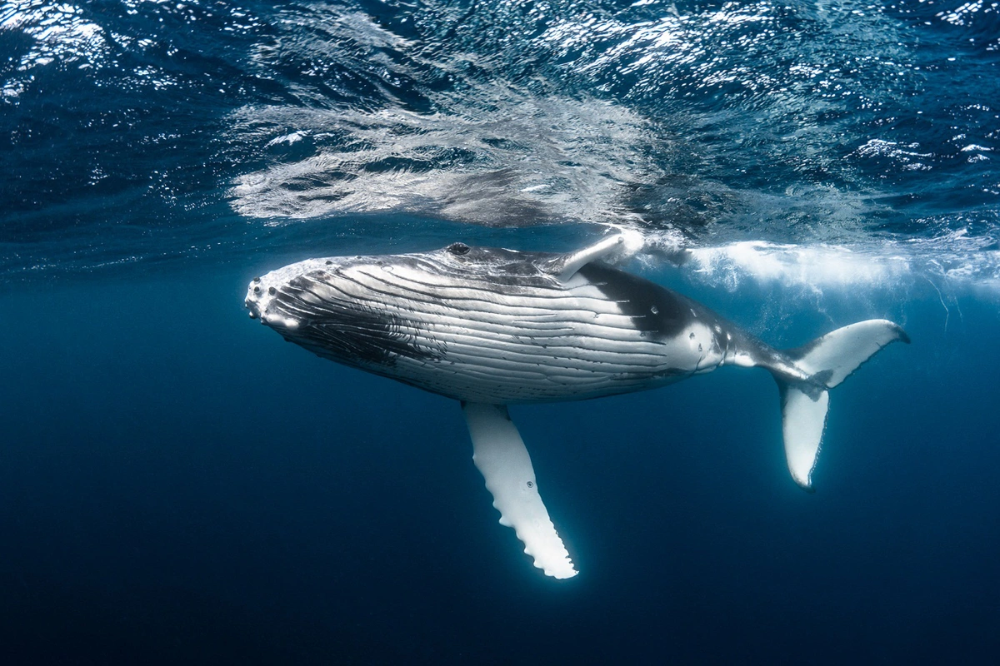
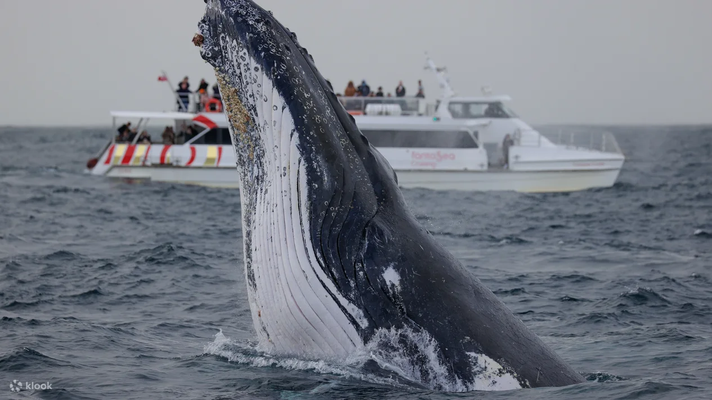

Thông tin mở đầu về cá voi xanh
Cá voi xanh (Balaenoptera musculus) là loài động vật lớn nhất từng tồn tại trên Trái Đất,
với chiều dài có thể lên đến 30 mét và trọng lượng hơn 200 tấn, tương đương với khoảng 33 con voi!

Dù có kích thước khổng lồ, thức ăn chủ yếu của cá voi xanh lại là nhuyễn thể nhỏ (krill).
Mỗi ngày, chúng có thể ăn tới 4 tấn nhuyễn thể, giúp duy trì sự cân bằng trong hệ sinh thái biển.

Cá voi xanh nổi tiếng với tiếng kêu vang xa dưới nước, có thể truyền đi tới 1.600 km,
khiến chúng trở thành một trong những loài động vật ồn ào nhất trên hành tinh.

Tuy nhiên, loài động vật tuyệt vời này hiện đang nằm trong danh sách các loài nguy cấp do săn bắt quá mức trong quá khứ và những tác động tiêu cực từ biến đổi khí hậu và ô nhiễm môi trường.
Một số lợi ích của cá voi xanh
🌍 1. Cân bằng hệ sinh thái biển:
-Phân bón đại dương: Phân cá voi chứa nhiều chất dinh dưỡng, giúp tảo và sinh vật phù du phát triển, tạo nền tảng cho chuỗi thức ăn biển.
-Vòng tuần hoàn dinh dưỡng: Khi cá voi lặn xuống và ngoi lên bề mặt, chúng giúp phân phối chất dinh dưỡng từ tầng sâu lên tầng mặt nước.
1.5 Long diên hương(phân cá voi xanh)
Long diên hương hay long duyên hương được xem là báu vật của biển khơi. Dù có giá lên tới hàng nghìn USD, đắt hơn cả vàng nhưng nhiều người vẫn bỏ tiền ra để sở hữu cho mình một khối long diên hương.
Long diên hương là gì?
Long diên hương là một chất sáp màu xám với thành phần là chất béo, được tạo ra trong hệ tiêu hóa của cá nhà táng và được bài tiết ra cùng với phân.

💨 2. Hấp thụ CO₂ và bảo vệ khí hậu:
-Khi cá voi chết, xác của chúng chìm xuống đáy biển, lưu trữ một lượng lớn carbon trong thời gian dài, giúp giảm thiểu lượng CO₂ trong khí quyển.
-Theo ước tính, mỗi con cá voi có thể hấp thụ khoảng 33 tấn CO₂ trong suốt vòng đời của nó.

🐟 3. Thúc đẩy sự phát triển của cá và hải sản:
-Nhờ vào việc gia tăng sinh vật phù du, cá voi xanh gián tiếp hỗ trợ nguồn thức ăn cho cá và các loài hải sản khác, góp phần duy trì ngành thủy sản.
🛶 4. Phát triển du lịch sinh thái:
-Du lịch ngắm cá voi (whale watching) là ngành du lịch phổ biến, mang lại nguồn thu lớn cho nhiều địa phương ven biển.

Cá voi xanh những hình ảnh cận cảnh tuyệt đẹp